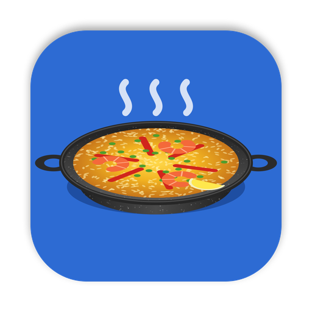

Cool chip. Fast Mac.
Paella only touches what’s heating your Mac up, only while it’s too hot, and as little as it can.
Your target temperature
Choose how hot is too hot, from 65 to 95 °C. Paella compares it with the average of the last minute, not with momentary spikes.
Efficiency cores first
2 °C before the target, heavy processes move to the efficiency cores. That alone often cools the chip before anything needs pausing.
Short, gentle pauses
Above the target, the busiest apps are paused for fractions of a second at a time, and Paella eases off as the chip cools.
Your app stays fast
The app you’re using is never limited, and you can mark any other one as unlimited from the menu. Paella remembers it.
Low Power Mode, as a last resort
If pausing isn’t enough, Paella can turn on Low Power Mode and restore your setting once things cool down. Optional.
Everything at a glance
Temperature and power in the menu bar with a traffic-light dot. History charts and the busiest apps, one click away.
Set it once. Let it simmer.
Three steps and your MacBook Air stops getting too hot to hold.
Install it
One command with Homebrew, or the notarized download from GitHub.
Set your target
82 °C out of the box. Lower it for a cooler lap, raise it for more speed.
Forget about it
Paella works in the background and only steps in when the chip gets too hot. The dot in the menu bar tells you when.
Privacy and safety
Paella runs entirely on your Mac and never leaves an app frozen.
- No network, no data collection. Paella makes no network connections: it doesn’t collect, send or share anything.
- No app left paused. Everything is resumed when you turn control off or quit, and on the next launch if Paella was ever force-quit. The optional watchdog relaunches it instantly.
- Least privilege. Low Power Mode needs root, so Paella only installs a rule that allows exactly two commands: turning it on and off. Optional and removable from Settings.
- Signed and notarized. Paella is signed with a Developer ID and notarized by Apple.
Frequently asked questions
What people usually ask before installing it.
Which Macs is it for?
Paella is designed for Apple silicon MacBook Air models, which have no fan. It needs macOS 14 Sonoma or later.
Why isn’t it on the Mac App Store?
To read the temperature sensors Paella uses private macOS APIs, and it needs to pause other apps. Neither is allowed inside the App Store sandbox, so it’s distributed with Homebrew instead, signed and notarized by Apple.
Is it safe to pause apps?
Paella uses the same signals macOS uses to suspend and resume processes, for fractions of a second at a time. It leaves the app you’re using and system processes alone, and resumes everything when it stops.
Will my Mac be slower?
Only the processes heating the chip, and only while it’s above your target. Without Paella, macOS throttles the whole chip once it gets hot enough, including the app in front of you.
Which languages is it available in?
English, Spanish, French, German, Italian, Brazilian Portuguese, Japanese and Simplified Chinese.
How do I update or uninstall it?
brew upgrade --cask paella updates it and brew uninstall --cask paella removes it. If you installed the Low Power Mode rule or the watchdog, remove them from Settings first.
Support
Found a bug or have an idea? Open an issue on GitHub. For anything else, write to dev@arcesaez.com.
Like Paella? A star on GitHub helps more people find it.
Star on GitHub
Never overcooked.
Install Paella from the Terminal with Homebrew:
brew trust arcester/tap &&brew install --cask arcester/tap/paella
brew trust lets Homebrew install apps from my tap. The first time you open Paella, macOS asks whether you want to open an app downloaded from the internet: click Open. It’s notarized by Apple, so you’ll only see this once.
Prefer not to use Homebrew? Download the notarized zip from GitHub Releases and move Paella.app to Applications.